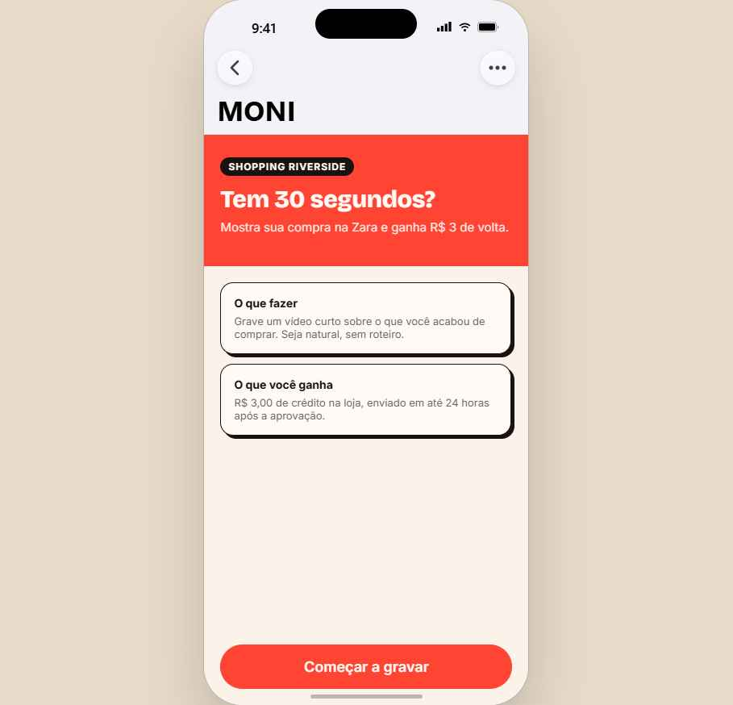
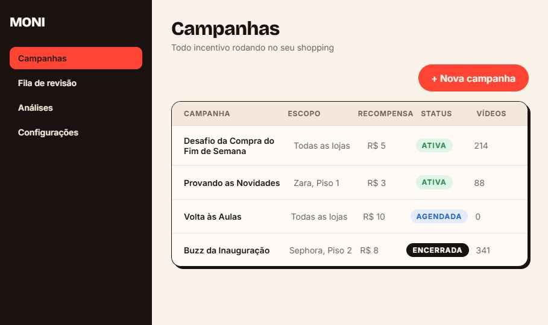
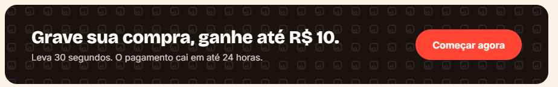
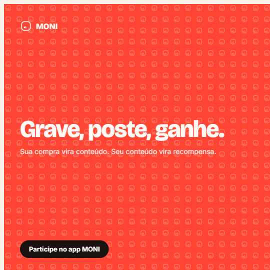
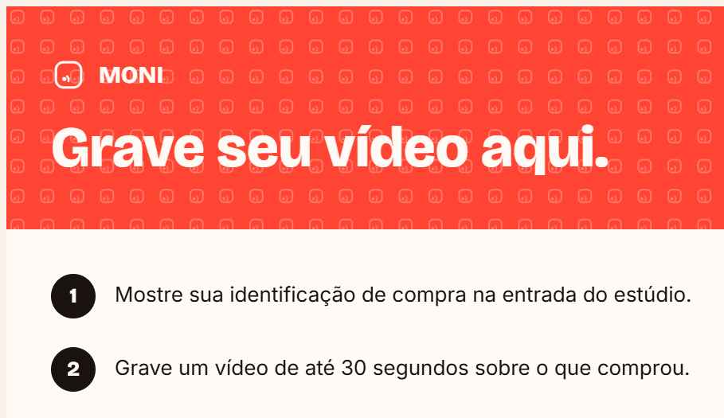
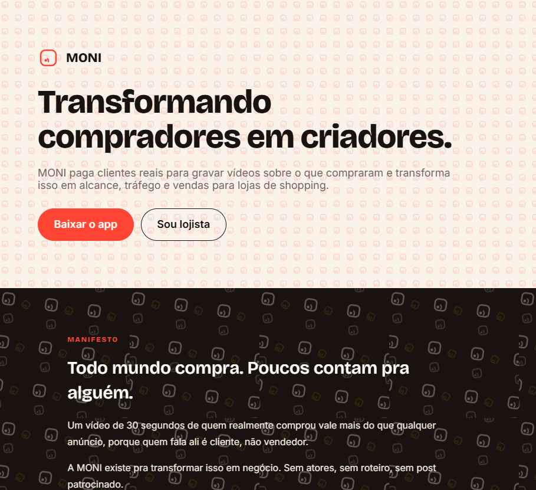

Paleta de cores
Paleta primária
Minimalista, usada em toda comunicação: coral para ação, tinta para texto, papel para superfície.
RGB 255 68 51
HEX #FF4433
CMYK 0 73 80 0
RGB 26 18 16
HEX #1A1210
CMYK 0 31 38 90
RGB 251 243 234
HEX #FBF3EA
CMYK 0 3 7 2
Paleta secundária
Uso esporádico em gráficos, dados e acentos. Nunca em CTAs principais.
RGB 15 110 92
HEX #0F6E5C
CMYK 86 0 16 57
RGB 242 183 5
HEX #F2B705
CMYK 0 24 98 5
RGB 36 97 201
HEX #2461C9
CMYK 82 52 0 21
Proporção sugerida: 60% papel, 30% tinta, 10% coral. As cores secundárias somadas não devem passar de 5% de qualquer peça.
"Não faça"
A paleta funciona porque é usada com disciplina. Estes são os erros mais comuns ao aplicá-la.

Uso do logotipo
Selo arredondado (squircle) com um ponto "ao vivo" e uma onda de transmissão: sinal, conexão, conteúdo ao vivo.
MONI MONI
MONIClearspace: altura do ponto ao redor do símbolo. Tamanho mínimo: 24px digital, 8mm impresso.
Quando usar cada versão: coral sobre papel ou fundos neutros claros; tinta em impressos de uma cor só; papel (branco) sobre fundos escuros, coral ou fotografia.
Cores secundárias no logomark são exceção, não regra: só quando a peça inteira já usa aquele acento (ex: um relatório de impacto ambiental em teal, um card de recompensa em gold).
Variações estudadas
Direções exploradas antes de fechar o logomark atual (selo arredondado, item 3). Todas existem como SVG standalone em assets/brand/, prontas para reaproveitar em patterns ou peças alternativas.
A versão 3 (selo arredondado) foi escolhida por funcionar melhor em tamanhos pequenos e por combinar com a linguagem de cantos suaves do resto do sistema.
App e painel da loja


App do consumidor (esquerda) e painel de campanhas do lojista (direita). Mais telas na aba de UI Kits do sistema de design.
Buttons, Icon Buttons e campos de formulário
Buttons
Campos de formulário
Button, IconButton, Input, Select, Checkbox, Radio e Switch, renderizados ao vivo a partir do próprio sistema de design. Conjunto completo na aba de Componentes.
Diálogos e overlays
Modal centralizado, contido dentro da própria tela (não fixo à janela): fundo escurecido, cartão com título, corpo e ações no rodapé.
Ver Card, Tabs, Dialog na aba de Componentes para a versão interativa.
Ritmo e escala
Espaçamento em múltiplos de 4px (tokens space-1 a space-8). Consistência de gap entre elementos é o que dá o acabamento de "produto sério".
Formulários: gap space-5 entre campos, padding space-8 no container, space-1 entre rótulo e campo. Ver "Espaçamento em uso" na aba de tokens para os 4 padrões completos.
Famílias e uso
- Use em: títulos, números grandes, headlines de campanha.
- Nunca abaixo de 20px. Tracking levemente negativo (-0.02em) em tamanhos grandes.
- Google Fonts, substituição sinalizada; nenhuma fonte de marca foi fornecida.
- Use em: parágrafos, rótulos de UI, botões, formulários.
- Nunca abaixo de 12px. Corpo de texto confortável em 14 a 16px, line-height 1.5 a 1.65.
- Bold só para ênfase e rótulos, não para blocos longos de texto.
- Use em: códigos promocionais, IDs de pedido, valores em tabelas técnicas.
- Nunca em títulos, botões ou textos longos.
Estilo de imagem
Espontânea, quente, gente real comprando e gravando no estúdio MONI, nunca still de banco de imagens corporativo.
Evite: modelos posando, luz de estúdio, fundo infinito branco, preto e branco, filtros artificiais.
Patterns e textura
Geométrico: grade modular do símbolo, para capas, cards e apresentações.
Orgânico: escalas e rotações variadas, misturando teal e dourado, para stories e peças de estúdio.
Textura granulada: overlay sutil (mix-blend-mode: overlay, opacidade 0.3 a 0.5) sobre blocos de cor, para tirar o aspecto chapado perfeito demais.
Banners e aplicações
Capturas reais dos templates prontos do sistema de design.



CTA banner, post social e sinalização de estúdio. Mais templates na aba de Templates do sistema de design.
A marca em uso no site
Print do topo da landing page: hero com manifesto ao fundo.

Arquivos SVG para uso imediato
Todo elemento gráfico da marca existe como SVG vetorial, pronto para copiar e usar em qualquer peça, em qualquer tamanho, sem perda de qualidade.
Todos em assets/brand/.
Como escrevemos
Direta, simples, nunca corporativa. "Você" para consumidor e lojista. Frases curtas, voz ativa, números em vez de adjetivos. Sem emoji. Caixa alta só em rótulos curtos.
"Aprove o vídeo. Nós cuidamos do pagamento."
Não: "Assim que você tiver revisado o conteúdo, poderá prosseguir com a aprovação."
A marca no shopping
Fotos reais do estúdio de gravação MONI em operação.
Mais templates prontos na aba de Templates do sistema de design: story, capa de vídeo, card de depoimento e slide de apresentação.